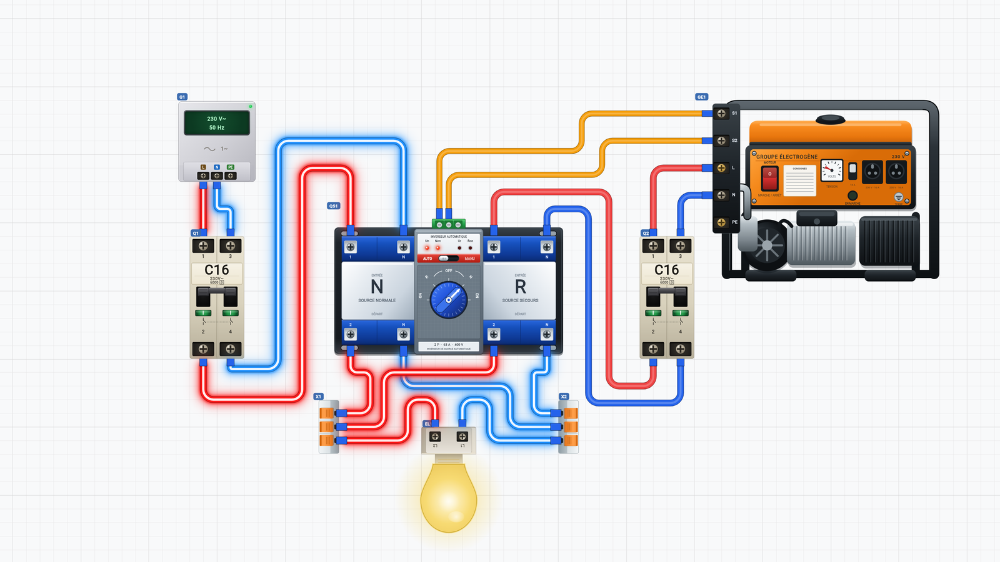
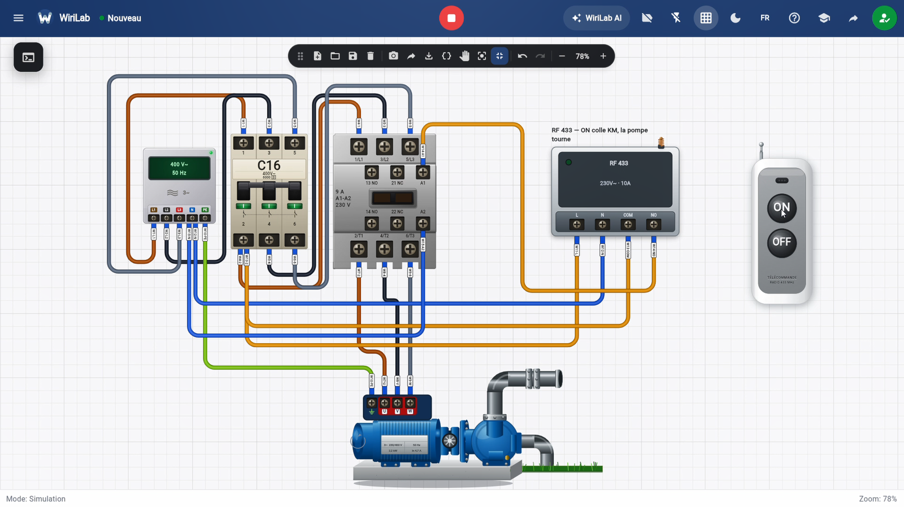

Schéma · Documentation
Lire un schéma électrique avant de câbler
Le schéma n’est pas une photo du coffret : c’est une convention. Les symboles représentent les appareils, les traits les conducteurs. Savoir passer du dessin au fil réel — ou au fil virtuel — évite les inversions et fait gagner du temps en examen comme en entreprise.

1. Sens de lecture
En formation domestique, on lit souvent de la source (gauche ou haut) vers les points d’utilisation. Repérez d’abord le symbole de protection (disjoncteur, différentiel), puis les commandes, puis les charges.
2. Conducteurs à identifier
- Phase : souvent marquée L, parfois trait plus épais ou couleur indiquée dans la légende.
- Neutre : N, retour des charges vers la source.
- Terre : PE, symbole vert-jaune en réalisation.
3. Correspondance schéma ↔ montage
Chaque symbole a des bornes numérotées sur le schéma du constructeur. Sur le simulateur ou le plateau, ces numéros doivent correspondre : L du disjoncteur, sortie vers L de l’interrupteur, etc. Cochez mentalement chaque liaison avant de serrer.

4. Légende et échelle
Un bon schéma de TP indique la tension, le calibre du disjoncteur et parfois la section des fils. Sans légende, demandez-la : ne devinez pas le calibre de protection.
5. Du schéma à l’export
Après avoir câblé dans WiriLab, vous pouvez générer un schéma aligné sur votre montage — utile pour le dossier de stage ou pour expliquer votre travail au formateur.
À retenir : source → protection → commande → charge ; une liaison du schéma = un fil à tracer.